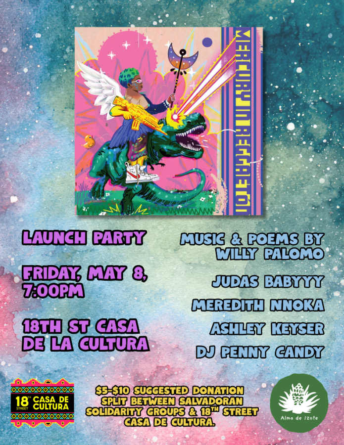

Mercury in Reggaeton book launch
We are hosting a book launch of Willy Palomo’s latest collection of poems
MERCURY IN REGGAETÓN. Find us in the 18th Street Casa de Cultura (2057 W 18th St, Chicago) at 7:00PM on Friday, May 8th. The event will feature poetry and music by Willy Palomo, Meredith Nnoka, Judas Babyyy, Ashley Keyser, and DJ Penny Candy. $5-$10 suggested donation split between solidarity organizations in El Salvador and 18th St Casa de Cultura.
“Flanked by catastrophic headlines and somehow worse breakups, MERCURY IN REGGAETÓN indulges in sobs and perreo before facing impending doom and apocalypse. A marriage between hip-hop and the line break, between the ghazal and dembow, Palomo recounts love in a time of dystopia and resistance in a time of heartbreak.”
Willy Palomo (he/they/she) is the author of Mercury in Reggaetón, winner of the Light Scatter Prize, and Wake the Others, winner of a Foreword Prize in poetry. in 2025, he repped Chicago at the World Poetry Slam in Cuidad Juárez. he is the son of two refugees from El Salvador.
Meredith Nnoka is a Chicago-based poet, teacher, and prison abolitionist. They are the author of Les Portes, selected by Cameron Awkward-Rich as winner of the 2025 CAAPP Book Prize, and the chapbooks I Could Never Be Your Woman and A Hunger Called Music. They teach poetry in carceral facilities and have received fellowships from Illinois Humanities, Lambda Literary, and the Prison + Neighborhood Arts/Education Project.
Ashley Keyser lives in Chicago. Her work has appeared or is forthcoming in Gulf Coast, AGNI, Beloit Poetry Journal, The Adroit Journal, and elsewhere. She is currently writing a poetry collection about colors and queer desire.
Judas Babyyy is a Chicago-based singer-songwriter, poet, educator, and 365 party girl. They are currently writing an album about yearning, the ocean, and grief. Find them @judasbabyyy on ig if you want to party.
Penny Candy is a DJ, poet, and fictional astronomer based in “chicago”. She loves to dance and is rumored to smell mostly of coffee, coconut, and house music.